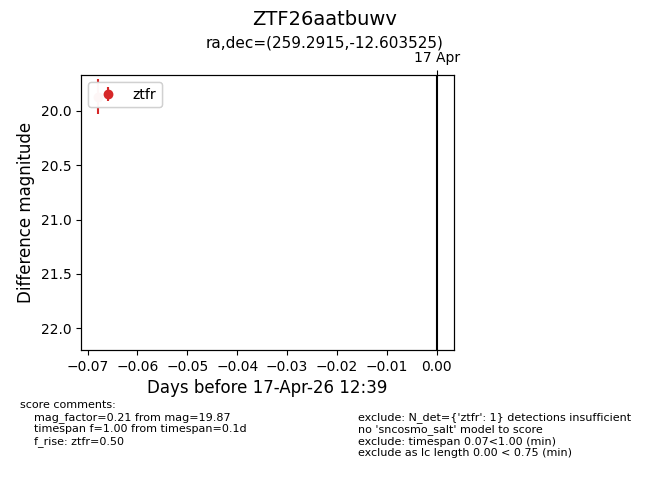
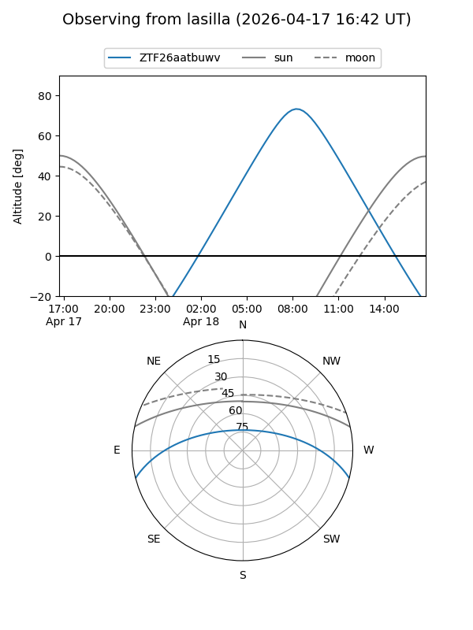
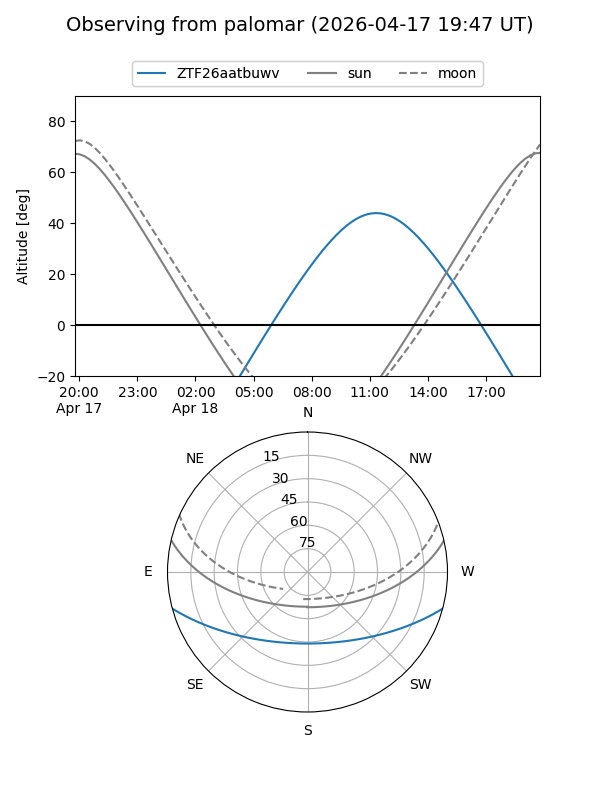

ZTF26aatbuwv
Target ZTF26aatbuwv at 2026-04-17 12:46
Aliases and brokers:
FINK: link
Lasair: link
ALeRCE: link
alt names
ZTF26aatbuwv (ztf,fink_ztf)
Coordinates:
equatorial (ra, dec) = 259.2915,-12.60352
equatorial (HMS+DMS) = 17:17:09.95,-12:36:12.69
galactic (l, b) = (10.3439,+14.34609)
Flags:
Photometry:
last ztfr=19.87
1 ztfr detections
Lightcurve

Visibility


Additional plots